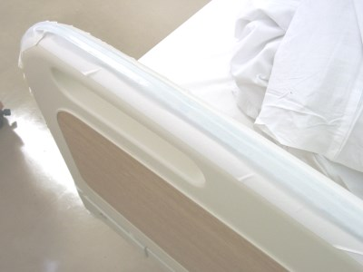

かならずお読みください →

テープスイッチ離床センサ フットボードへ

テープスイッチはテープスイッチジャパン株式会社の商品です。
月ヶ瀬離床センサやテープスイッチ離床センサは2014年現在、既に10年以上にわたって使い続けています。 この間、多くの離床センサが各社で商品化されました。そのうちいくつかを当院でも購入し、これまでの離床センサと組み合わせて色々な場面で利用しています。
多様なニーズへの適合や対象の変化へ対応するため、 いくつかのシンプルなわかりやすい道具や方法を組み合わせて利用することは、 低コストで柔軟な対応が可能になり、現場の工夫やアイデアを引き出すきっかけににもなります。フットボードやヘッドボードを乗り越える行為を検知するために、写真のようにその上部にテープスイッチをガムテープで貼りつけたところなかなか役に立つことがわかりました。その後現場からのニーズが増えるにつれて、センサの数も増やし、またいくらか短いテープスイッチをL字柵に貼り付けるバリエーションも作りました。 もともと手作りですので、このような変形版は簡単に作れます。
このタイプの特徴は取り扱いが比較的楽で、設置や撤去がごく短時間でできることです。 夕方の入院（転院）で観察が不十分とか、薄暗くなるにつれて様子が変わってきて、今晩が心配などの場合にこの特徴が生きてきます。
まとめ
離床センサが必要な患者さんは、みんさん似ているようで、それぞれ違います。また回復により徐々に変わって離床センサがいらなくなることもよくあります。なかには離床センサがとれてよかったと看護スタッフとともによろこぶ方もおられます。またずっと離床センサが必要な人も、必要なくなったけれど使っていたことを知らない（覚えていない）人もいます。
シンプルな道具の組み合わせで柔軟な対応を低コストで実現できると書きました。これには現場で道具を活用しようとする人々と、その人々が活用できる道具のバランスのよいいい関係が重要と考えています。意欲に欠けるヒトとか高性能だがさっぱりわからないブラックボックスのモノでは解決できない問題もたくさんありますが、そのひとつがこの離床センサの問題と思います。
色々な偶然が重なって、ヒトも生きるモノも生きる、現場で役に立つもの作りが少しできたようです。
2014/6/20 公開研究企画課リハ工学科にもどる